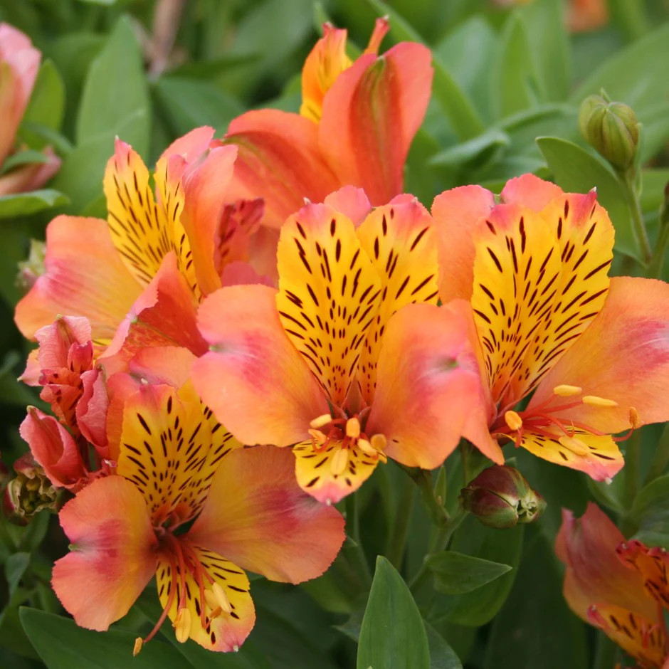
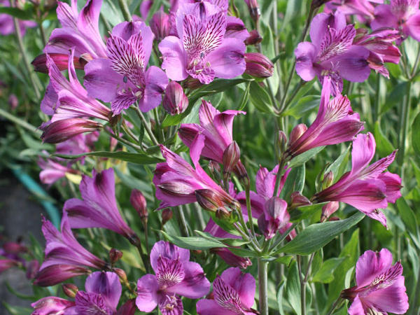
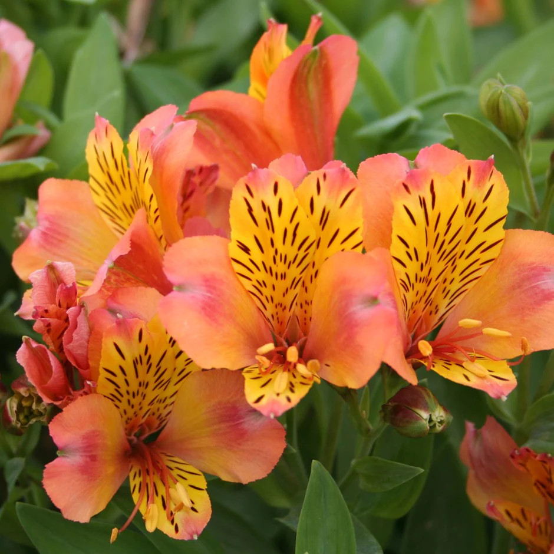
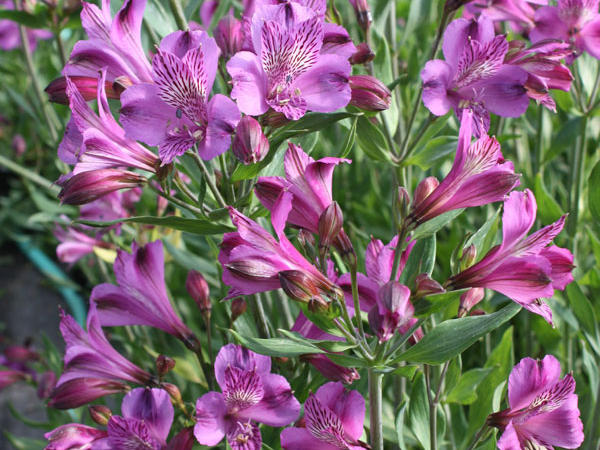

Common Name: Peruvian lily
Botanical Name: Alstroemeria
Chinese Name: 六出花
 



Other references
RHS
Gardenia
Gardeners' World
Alstroemeria, also known as Peruvian lily and Lily of the Incas as it originates from South America, is a hardy perennial renowned for showy and vividly coloured summer blooms. The flowers are borne from midsummer to mid-autumn in colours that include red, orange, purple, pink and yellow, as well as softer shades of pink and white.
Often called Princess Lilies, Peruvian or Inca Lilies, Alstromeria’s stunning displays make it one of the most popular summer flowering perennials of all time. Often seen in expensive bouquets, Alstroemeria also make spectacular additions to any garden. Their gorgeous, delicate blooms come in one of the widest and brightest ranges of colours imaginable.
Flowering from early June onwards, Alstroemeria will go on right through until early Autumn and just get better and better every year. Once planted, these bare-root beauties will quickly establish and go on to produce strong stems that will grow up to 2-3ft tall this year. Completely covered in flowers along their top half, Alstroemeria are perfect for cutting and creating the most stunning indoor display.
此花的中文学名是六出花，别名包括智利百合、秘鲁百合、水仙百合等。拉丁学名Alstroemeria。六出花花色丰富，盛开时更显典雅富丽，是新颖的切花材料。近年来，已开始应用于盆栽观赏。
六出花原产南美的安第斯山地区，1754年引种到英国。直到20世纪50年代在欧美用于切花观赏后，才开始迅猛发展。
六出花为多年生草本。茎直立，不分枝。披针形的叶子相互生长，叶柄处拧了一下，呈螺旋状排列，所以我们看到的叶子的上半面实际是下半面，给出有趣。六出花春末夏初开花，不同品种花色各异，有橙色，粉色，红色，紫色，黄色，白色等。
六出花属包括50多个种类，杂交品种有190多，大多数都是在实验室培育出来的。据互动百科介绍，六出花在我国还处于引种阶段，在切花市场还不多见，仅有少数企业进行小规模的试种。盆栽六出花仅在展览会上作展品，使用的还是切花品种。为此，盆栽六出花在我国还是一个空白，有较好的发展前途。
六出花很美，但是没有味道。六出花切花可以在花瓶里存放两周。 六出花比较容易打理，在旺盛的生长季节应有充足的水分供应和较高的空气湿度。炎热夏季处于半休眠状态。冬季温度较低时应注意控制水分。 六出花象征财富，昌盛，和运气。花语是友谊。
此花的中文学名是六出花，别名包括智利百合、秘鲁百合、水仙百合等。拉丁学名Alstroemeria。六出花花色丰富，盛开时更显典雅富丽，是新颖的切花材料。近年来，已开始应用于盆栽观赏。六出花为多年生草本。茎直立，不分枝。披针形的叶子相互生长，叶柄处拧了一下，呈螺旋状排列，所以我们看到的叶子的上半面实际是下半面，给出有趣。六出花春末夏初开花，不同品种花色各异，有橙色，粉色，红色，紫色，黄色，白色等。
六出花很美，但是没有味道。六出花切花可以在花瓶里存放两周。六出花比较容易打理，在旺盛的生长季节应有充足的水分供应和较高的空气湿度。炎热夏季处于半休眠状态。冬季温度较低时应注意控制水分。